The technical field guide / Read at your own depth
Follow the connections. Find the constraint.
Twelve connected decisions shape one viable campus. Each chapter gives you the takeaway, the explanation, the evidence and a real property where the question matters.
A gas line on the map is the beginning of a conversation, not a fuel contract.
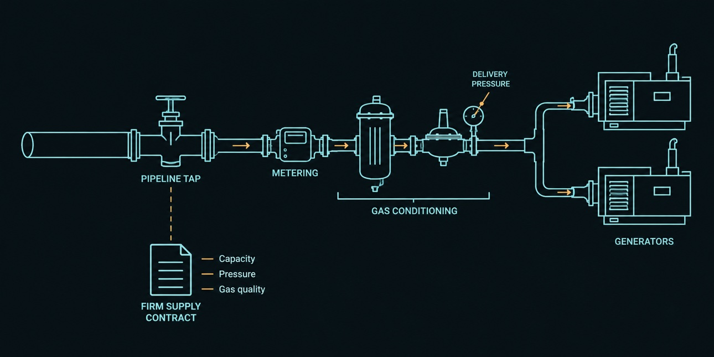
SEL explanatory schematic · not an engineered design
SEL insight Ask for the minimum pressure at peak demand and which party pays for compression and connection.
Why it changes the decision
The plant needs a continuous volume at the required inlet pressure and quality. Distance matters, but a short connection with no spare capacity can be worse than a longer feasible lateral. Evaluate transport rights and construction access as part of the same decision.
Evidence that moves this forward
Operator flow/pressure study; gas quality; firm transport terms; tap and meter scope; lateral route and easements; delivery date.
The trap to avoid
A broker cites pipeline diameter but cannot identify the delivery point or operator commitment.
Specify the operating architecture before asking whether power is available.
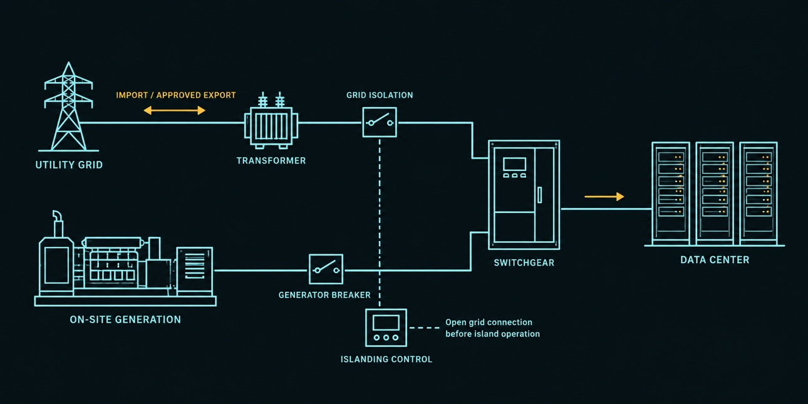
SEL explanatory schematic · not an engineered design
SEL insight Request a written explanation of the import, export and islanding modes the utility will allow.
Why it changes the decision
Grid-fed, islanded and parallel generation create different studies and reliability obligations. A nearby substation may lack spare capacity, require upgrades or serve another system. The useful answer names MW, cost, delivery date and restrictions.
SEL explanatory schematic · not an engineered design
SEL insight Ask the civil engineer to draw the final phase first, then work backward to Phase 1.
Why it changes the decision
Reserve room for halls, plant, substation, gas yard, cooling, drainage, security, construction laydown and expansion. Easements can split an otherwise large tract into unusable shapes. Avoid applying one acreage cutoff to every cooling and generation design.
Evidence that moves this forward
Boundary/topographic survey; setbacks and easements; flood and drainage overlay; phased concept layout; expansion control.
The trap to avoid
The acreage fits a spreadsheet but equipment, roads and setbacks do not fit the parcel.
Treat emissions, noise and community impact as design inputs.
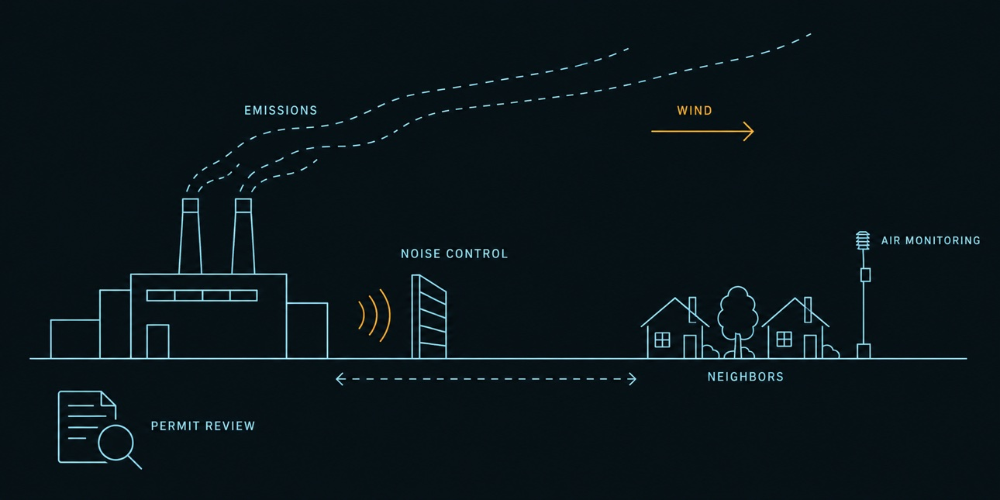
SEL explanatory schematic · not an engineered design
SEL insight Have the air consultant identify the approval path and unresolved issues before pricing the land as ready.
Why it changes the decision
The equipment configuration, operating hours, emissions controls and exact location determine the permitting analysis. Nearby homes, schools and other receptors influence modeling and layout. Requirements and administrative status must be checked for the specific project.
Liquid cooling at the chip does not tell you how the site releases heat.
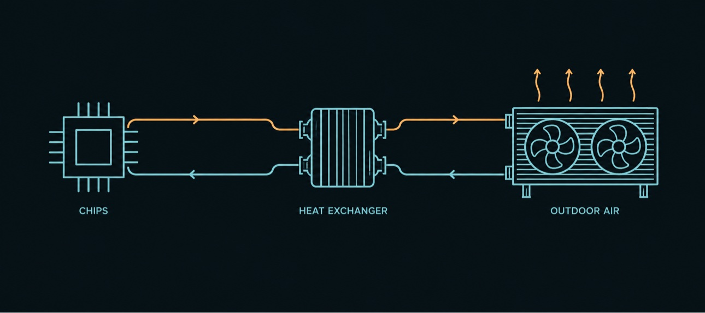
SEL explanatory schematic · not an engineered design
SEL insight Ask for average and peak-day water demand separately, with each system included.
Why it changes the decision
A closed chip loop can feed dry coolers, cooling towers or a hybrid system. These have different water, energy, footprint and hot-weather tradeoffs. Include generation water and treatment, not just compute cooling, in the campus balance.
Evidence that moves this forward
Hourly thermal model; summer design point; water rights and delivery; well yield where used; treatment/discharge plan; full campus water balance.
The trap to avoid
“Closed loop” is used as proof that the entire facility needs no make-up water.
An available parcel must also provide the rights to use the intended footprint.
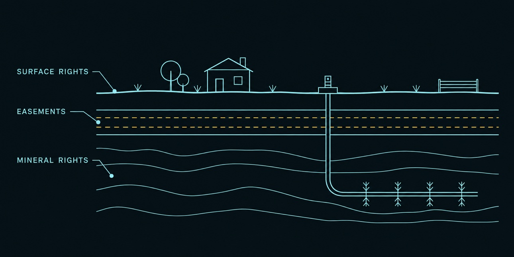
SEL explanatory schematic · not an engineered design
SEL insight Ask counsel to mark every title exception on the proposed site plan.
Why it changes the decision
Surface ownership, mineral interests, existing leases and utility easements can create competing uses. Whether rights convey requires title review; buying some minerals does not automatically resolve every surface conflict. Engage counsel on the specific instruments.
Evidence that moves this forward
Title commitment and exceptions; survey; mineral/lease review; access rights; surface-use terms; rights for off-site corridors.
The trap to avoid
A listing says “unrestricted” without explaining recorded easements and third-party rights.
Two providers are not enough if both routes fail at the same bridge.
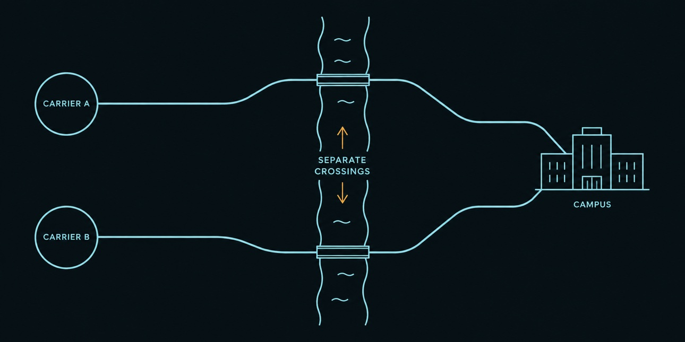
SEL explanatory schematic · not an engineered design
SEL insight Ask both carriers to identify shared trenches, poles, bridges and upstream facilities.
Why it changes the decision
Route diversity depends on physical paths, entrances and upstream facilities. Training and inference workloads have different connectivity and latency needs; define the service target with customers before choosing a remote site.
Evidence that moves this forward
Carrier route maps; separate entry design; bandwidth and latency requirements; build quotations; service dates; restoration terms.
The trap to avoid
“Fiber nearby” is presented without a construction route or a carrier willing to serve the campus.
The cheapest ground can carry the most expensive surprises.
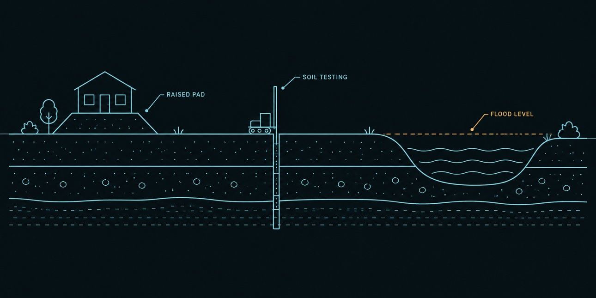
SEL explanatory schematic · not an engineered design
SEL insight Scope investigations around the heaviest equipment and the most uncertain parts of the parcel.
Why it changes the decision
Evaluate drainage, flood exposure, settlement, expansive soils, karst or gypsum where relevant, former wells and past site uses. The objective is a buildable and insurable footprint, not a favorable map color.
Evidence that moves this forward
Hydrology and grading concept; geotechnical borings; Phase I environmental assessment; wetland and ecological screening as applicable.
The trap to avoid
A regional soil map is treated as proof of foundation performance.
A plant is only buildable if the equipment and crews can reach it.
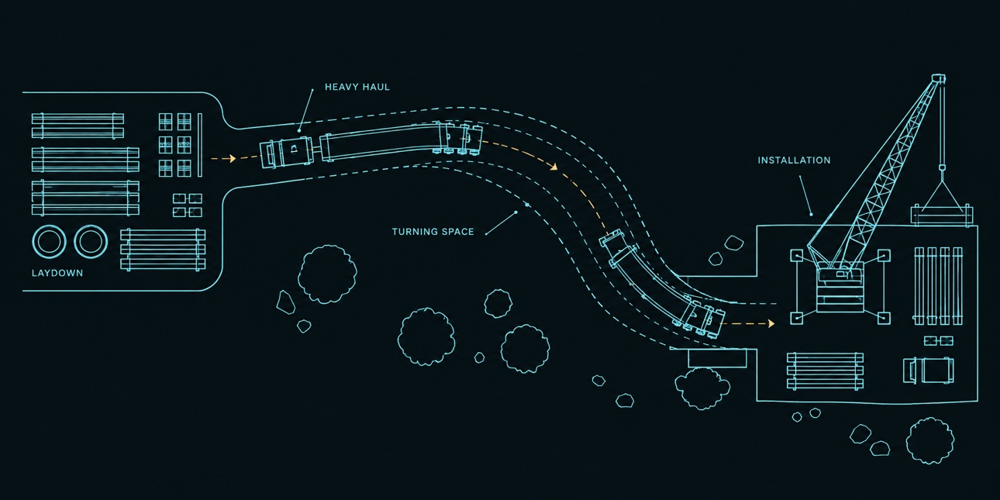
SEL explanatory schematic · not an engineered design
SEL insight Have the transporter review the largest and heaviest planned delivery before fixing the layout.
Why it changes the decision
Heavy equipment moves depend on bridge ratings, turning radii, clearances and route permissions. Construction access, laydown space, temporary power and labor availability also change cost and schedule. Size logistics for actual selected equipment.
Price the route to usable capacity, not just dollars per acre.
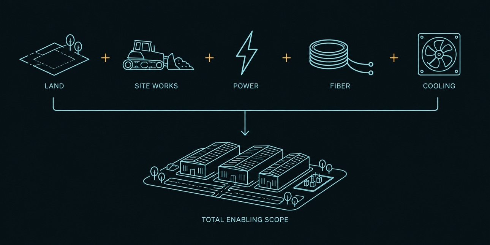
SEL explanatory schematic · not an engineered design
SEL insight Compare two sites using the same scope, assumptions and readiness standard.
Why it changes the decision
Land competes with gas laterals, electrical works, cooling, drainage, fiber and schedule risk in the same capital budget. An option can preserve flexibility, but access, study rights, conditions and deadlines must match the diligence plan.
Evidence that moves this forward
Written availability and terms; enabling-cost estimate; contingencies; option conditions; operating assumptions; downside case without unapproved incentives.
The trap to avoid
Low land cost is used to rank a site with unknown connection costs above a documented alternative.
Installed MW is not the load you can promise after a failure.
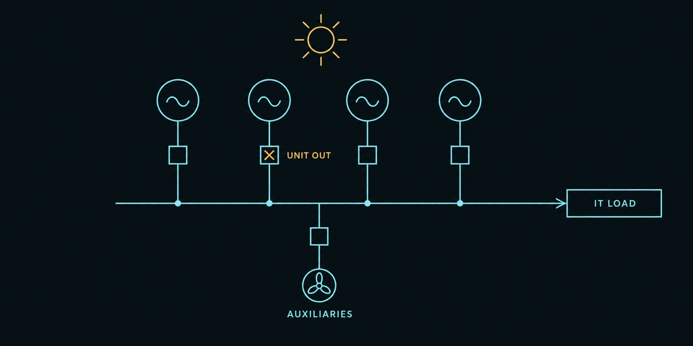
SEL explanatory schematic · not an engineered design
SEL insight Ask what load remains supported when the largest unit fails on the design summer day.
Why it changes the decision
Count the output available after the largest credible loss at the intended ambient conditions, then subtract plant auxiliaries if ratings are gross. Fuel, controls, transformers and switchgear can create common failure points even with spare generators.
Plan for the site’s hardest day and its final phase.
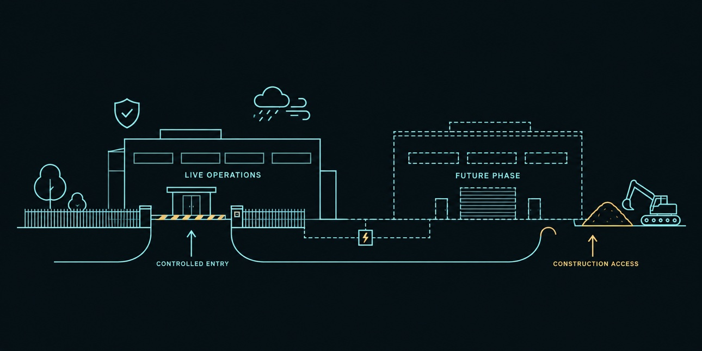
SEL explanatory schematic · not an engineered design
SEL insight Ask how Phase 2 can be built while Phase 1 keeps operating.
Why it changes the decision
Security perimeters, emergency access and future construction should coexist with an operating campus. Model the local temperature and weather envelope, and keep future utility corridors from crossing critical operational areas.
Evidence that moves this forward
Site security concept; emergency access; local climate design inputs; OEM derating curves; phased expansion and construction separation.
The trap to avoid
Expansion is counted as vacant land even though it lacks access or service corridors.
Six 20 MW units total 120 MW on paper. Lose one, then account for summer conditions, and the supported load can be much smaller.
This simplified model assumes equal units with net ratings at reference conditions. It excludes fuel common-mode failures, UPS duration, maintenance overlap and network constraints.
Available campus MW = (units − 1) × unit MW × (1 − derating). IT MW = available campus MW ÷ PUE.
Interactive insight / Assumption-led
Make the water question measurable.
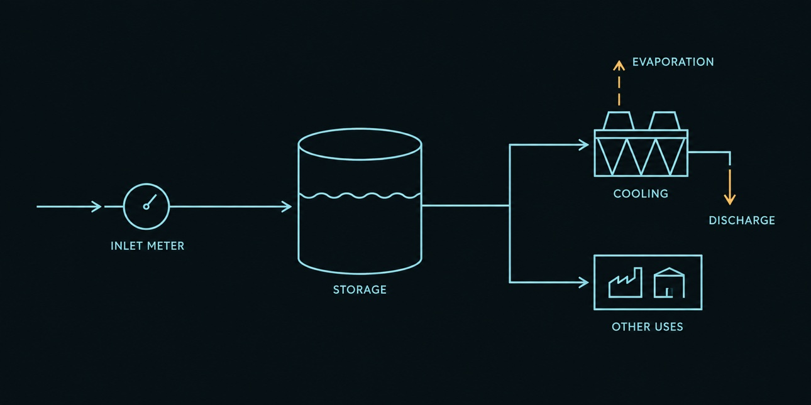
SEL explanatory schematic · not an engineered design
Use WUE to translate IT energy into an average daily site-water scenario. These values are inputs, not claims about a property or a selected cooling system.
24-hour full IT load × WUE. Excludes separately accounted generation water. Annual WUE does not establish peak-day supply.